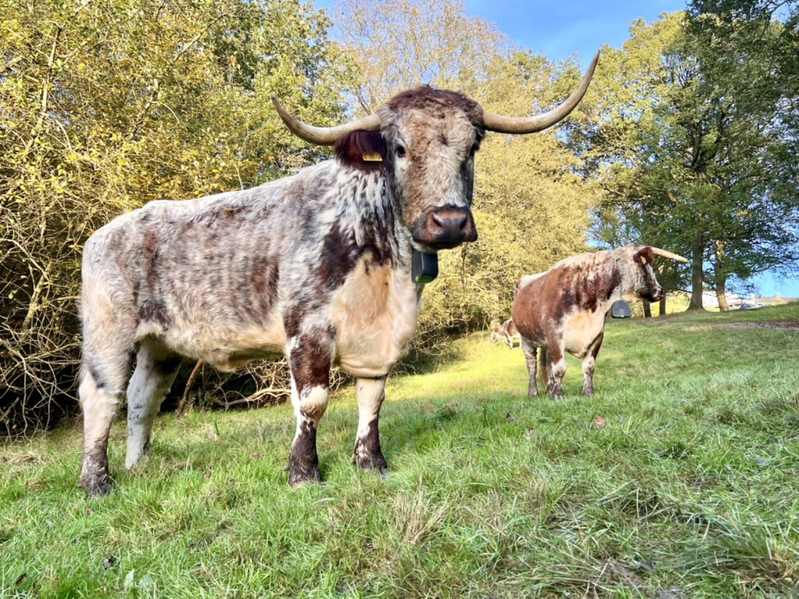
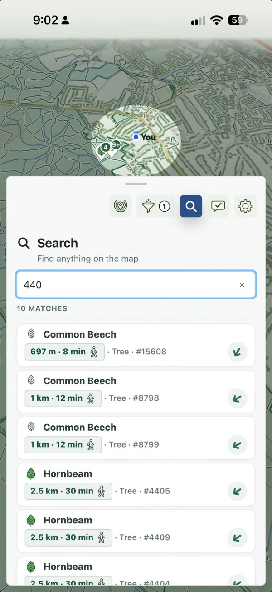
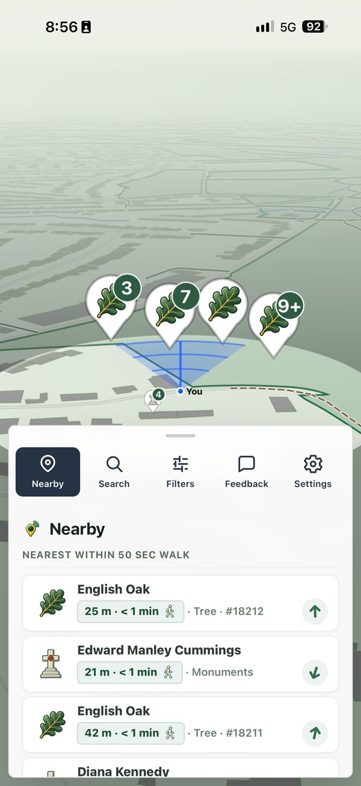
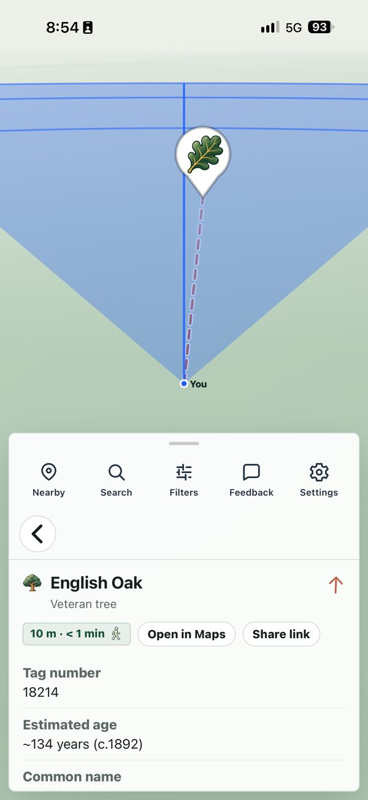

Works where your phone doesn't
Download once, then explore the trees, paths and landmarks without a signal.
A free, offline map of Epping Forest. Find 24,906 veteran trees, forest paths, pubs and grazing cattle.
Sign up to hear when early testing opens.

Download once, then explore the trees, paths and landmarks without a signal.
Look up a tree’s tag number to find its species, record and estimated age.
See the latest reported cattle locations from their GPS collars. Positions refresh while online; offline, you’ll see the last saved positions, which may be out of date.
Each tag identifies a tree in the Veteran Tree Register. Look up one you’ve spotted, or choose one for your next walk.



By choosing “Email me updates”, you agree to receive emails from Epping Forest Finds when early testing opens, plus weekly Epping Forest Ledger updates once the site launches.
One more step
Look for an email from Epping Forest Finds and click “Confirm my email” to finish signing up.
Can’t see it? Check your spam or junk folder.
Round the forest · Every week
Weekly field notes on the forest’s trees, cattle and changing seasons.
Read the Ledger →